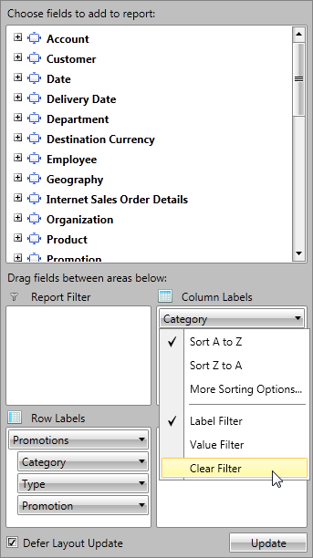

Group Filtering
In this article we will show you how to apply different filters on your RowGroupDescriptions and ColumnGroupDescriptions when your data is from OLAP Cube.
3
Filter Types
The Data in RadPivotGrid can be filtered based on several conditions to give you a view on specific details or just to make the report shorter.
There are two types of filters you may use on your RowGroupDescriptions/ColumnGroupDescriptions.
Label filter - filters the report based on the Header name.
Value filter - filters the report based on one of the aggregates used.
Here is the initial state of RadPivotGrid that we will use to show how different filters will change the report.

Label Filter
The LabelFilter is used for filtering the data based on the Headers (row or column). The LabelFilter is using one of the following conditions:
equals - showing only groups which header fully match the parameter we pass.
does not equal - showing all groups which header does NOT match the parameter we pass.
contains - showing only groups which header contains the parameter we pass.
does not contain - showing only groups which header does NOT contain the parameter we pass.
Equals and does not equal are case sensitive and are using string comparison between the unique name of the member (defined in the Cube itself) and the passed parameters.
*Contains* and *does not contain* are not case sensitive.
So if we apply a LabelFilter on the Category ColumnGroupDescription with condition contains and parameter
"C" we will receive the following result:
 Defining Label Filter
Defining Label Filter
Label Filter can be defined in the XAML, code behind or even at runtime by using RadPivotFieldList.
To apply Label Filter you should set it to the GroupFilter property of XmlaGroupDescription.
To define Label Filter, use the OlapLabelGroupFilter class from Telerik.Pivot.Core.Filtering namespace. Each OlapLabelGroupFilter must have a Condition defined. The Condition can be:
OlapComparisonCondition - used to compare the Header with the value set in the Than property based on the Condition property. OlapComparisonCondition is used
for "equals" and "does not equal" comparison. The value in Than property is case-sensitive.OlapTextCondition - used when you want to filter the data based on a string value defined in Pattern property. The Comparison property can have the values "contains" or "does not contain". The value of
Pattern property is not case-sensitive.
XAML
<pivot:XmlaGroupDescription MemberName="[Promotion].[Promotion Category]">
<pivot:XmlaGroupDescription.GroupFilter>
<pivot:OlapLabelGroupFilter>
<pivot:OlapLabelGroupFilter.Condition>
<pivot:OlapTextCondition Comparison="Contains" Pattern="C"/>
</pivot:OlapLabelGroupFilter.Condition>
</pivot:OlapLabelGroupFilter>
</pivot:XmlaGroupDescription.GroupFilter>
</pivot:XmlaGroupDescription>
<pivot:XmlaGroupDescription MemberName="[Product].[Category]">
<pivot:XmlaGroupDescription.GroupFilter>
<pivot:OlapLabelGroupFilter>
<pivot:OlapLabelGroupFilter.Condition>
<!--[Product].[Category].&[3] = Clothing-->
<pivot:OlapComparisonCondition Condition="Equals">
<pivot:OlapComparisonCondition.Than>
<sys:String>[Product].[Category].&[3]</sys:String>
</pivot:OlapComparisonCondition.Than>
</pivot:OlapComparisonCondition>
</pivot:OlapLabelGroupFilter.Condition>
</pivot:OlapLabelGroupFilter>
</pivot:XmlaGroupDescription.GroupFilter>
</pivot:XmlaGroupDescription>
C#
XmlaGroupDescription groupDescription1 = new XmlaGroupDescription();
groupDescription1.MemberName = "[Promotion].[Promotion Category]";
OlapLabelGroupFilter labelGroupFilter1 = new OlapLabelGroupFilter();
labelGroupFilter1.Condition = new OlapTextCondition() { Comparison = TextComparison.Contains, Pattern = "C" };
groupDescription1.GroupFilter = labelGroupFilter1;
XmlaGroupDescription groupDescription2 = new XmlaGroupDescription();
groupDescription2.MemberName = "[Product].[Category]";
OlapLabelGroupFilter labelGroupFilter2 = new OlapLabelGroupFilter();
labelGroupFilter2.Condition = new OlapComparisonCondition() { Condition = Comparison.Equals, Than = "[Product].[Category].&[3]" };
groupDescription2.GroupFilter = labelGroupFilter2;
VB.NET
Dim groupDescription1 As New XmlaGroupDescription()
groupDescription1.MemberName = "[Promotion].[Promotion Category]"
Dim labelGroupFilter1 As New OlapLabelGroupFilter()
labelGroupFilter1.Condition = New OlapTextCondition() With {.Comparison = TextComparison.Contains, .Pattern = "C"}
groupDescription1.GroupFilter = labelGroupFilter1
Dim groupDescription2 As New XmlaGroupDescription()
groupDescription2.MemberName = "[Product].[Category]"
Dim labelGroupFilter2 As New OlapLabelGroupFilter()
labelGroupFilter2.Condition = New OlapComparisonCondition() With {.Condition = Comparison.Equals, .Than = "[Product].[Category].&[3]"}
groupDescription2.GroupFilter = labelGroupFilter2
Label Filters for user-defined hierarchies
OLAP dimensions consist of attribute hierarchies and user-defined hierarchies.
User-defined hierarchies have different levels and with RadPivotGrid you can apply LabelFilter on each of the levels. To do this you should use Levels property of XmlaGroupDescription.
Levels property is collection of XmlaLevelGroupDescriptions. Each of the LevelGroupDescriptions has its own MemberName and GroupFilter properties:
XAML
<pivot:XmlaGroupDescription MemberName="[Promotion].[Promotions]">
<pivot:XmlaGroupDescription.Levels>
<pivot:XmlaLevelGroupDescription MemberName="[Promotion].[Promotions].[Category]">
<pivot:XmlaLevelGroupDescription.GroupFilter>
<pivot:OlapLabelGroupFilter>
<pivot:OlapLabelGroupFilter.Condition>
<pivot:OlapTextCondition Comparison="Contains" Pattern="E"/>
</pivot:OlapLabelGroupFilter.Condition>
</pivot:OlapLabelGroupFilter>
</pivot:XmlaLevelGroupDescription.GroupFilter>
</pivot:XmlaLevelGroupDescription>
<pivot:XmlaLevelGroupDescription MemberName="[Promotion].[Promotions].[Type]">
<pivot:XmlaLevelGroupDescription.GroupFilter>
<pivot:OlapLabelGroupFilter>
<pivot:OlapLabelGroupFilter.Condition>
<pivot:OlapComparisonCondition Condition="Equals">
<pivot:OlapComparisonCondition.Than>
<sys:String>[Promotion].[Promotions].[Category].&[Reseller].&[Excess Inventory]</sys:String>
</pivot:OlapComparisonCondition.Than>
</pivot:OlapComparisonCondition>
</pivot:OlapLabelGroupFilter.Condition>
</pivot:OlapLabelGroupFilter>
</pivot:XmlaLevelGroupDescription.GroupFilter>
</pivot:XmlaLevelGroupDescription>
</pivot:XmlaGroupDescription.Levels>
</pivot:XmlaGroupDescription>
C#
XmlaGroupDescription groupDescription = new XmlaGroupDescription();
groupDescription.MemberName = "[Promotion].[Promotions]";
XmlaLevelGroupDescription levelGroupDescription1 = new XmlaLevelGroupDescription();
levelGroupDescription1.MemberName = "[Promotion].[Promotions].[Category]";
OlapLabelGroupFilter labelGroupFilter1 = new OlapLabelGroupFilter();
labelGroupFilter1.Condition = new OlapTextCondition() { Comparison = TextComparison.Contains, Pattern = "E" };
levelGroupDescription1.GroupFilter = labelGroupFilter1;
groupDescription.Levels.Add(levelGroupDescription1);
XmlaLevelGroupDescription levelGroupDescription2 = new XmlaLevelGroupDescription();
levelGroupDescription2.MemberName = "[Promotion].[Promotions].[Type]";
OlapLabelGroupFilter labelGroupFilter2 = new OlapLabelGroupFilter();
labelGroupFilter2.Condition = new OlapComparisonCondition() { Condition = Comparison.Equals, Than = "[Promotion].[Promotions].[Category].&[Reseller].&[Excess Inventory]" };
levelGroupDescription2.GroupFilter = labelGroupFilter2;
groupDescription.Levels.Add(levelGroupDescription2);
VB.NET
Dim groupDescription As New XmlaGroupDescription()
groupDescription.MemberName = "[Promotion].[Promotions]"
Dim levelGroupDescription1 As New XmlaLevelGroupDescription()
levelGroupDescription1.MemberName = "[Promotion].[Promotions].[Category]"
Dim labelGroupFilter1 As New OlapLabelGroupFilter()
labelGroupFilter1.Condition = New OlapTextCondition() With {.Comparison = TextComparison.Contains, .Pattern = "E"}
levelGroupDescription1.GroupFilter = labelGroupFilter1
groupDescription.Levels.Add(levelGroupDescription1)
Dim levelGroupDescription2 As New XmlaLevelGroupDescription()
levelGroupDescription2.MemberName = "[Promotion].[Promotions].[Type]"
Dim labelGroupFilter2 As New OlapLabelGroupFilter()
labelGroupFilter2.Condition = New OlapComparisonCondition() With {.Condition = Comparison.Equals, .Than = "[Promotion].[Promotions].[Category].&[Reseller].&[Excess Inventory]"}
levelGroupDescription2.GroupFilter = labelGroupFilter2
groupDescription.Levels.Add(levelGroupDescription2)
The value of "Than" property is the unique name of the member (defined in OLAP Cube). As you are unable to use & in XAML, you have to use & which will be parsed to &.
You have to define *sys* namespace: __xmlns:sys="clr-namespace:System;assembly=mscorlib"__.
Value Filter
Value Filter is applied on RowGroupDescriptions/ColumnGroupDescriptions based on the GrandTotals of one of the Aggregation descriptions used in
the application. To apply value filter you have to use one of the predefined conditions:
equals - show only members for which the selected measure fully matches the passed parameter.
does not equal - show all members for which the selected measure does NOT match the passed parameter.
is greater than - show only members for which the selected measure is greater than the passed parameter.
is greater than or equal to - show only members for which the selected measure is greater or equal to the passed parameter.
is less than - show only members for which the selected measure is smaller than the parameter we pass.
is less than or equal to - show only members for which the selected measure is smaller or equal to the passed parameter.
is between - show only members for which the selected measure is between the two passed parameters.
is not between - show only members for which the selected measure is NOT between the two passed parameters.
Value Filter is filtering the groups by number comparison between the GrandTotals of the groups and the parameters we pass, while Label Filter is a string filter.
So if we apply a Value Filter on the Category ColumnGroupDescription, set condition "is greater than" for the AggregateDescription Reseller Order Quantity and pass as parameter value 50000
we will notice that two of the groups are missing because their GrandTotal is less than 50 000.
 Defining Value Filter
Defining Value Filter
Value Filter can be defined in XAML, code behind or at runtime by using RadPivotFieldList.
Defining in the code is using ValueGroupFilter class from Telerik.Pivot.Core namespace. Each object of this type
must have Condition defined. Condition can be any of these:
ComparisonCondition - used to compare the Header with the value set in the Than property based on the Condition property.
IntervalCondition - used when you want to show only data that is (not) between two values set in the From and To properties based on the Condition property.
XAML
<pivot:XmlaGroupDescription MemberName="[Promotion].[Promotion Category]">
<pivot:XmlaGroupDescription.GroupFilter>
<pivot:OlapValueGroupFilter AggregateIndex="1">
<pivot:OlapValueGroupFilter.Condition>
<pivot:OlapIntervalCondition Condition="IsBetween" From="1000" To="5000"/>
</pivot:OlapValueGroupFilter.Condition>
</pivot:OlapValueGroupFilter>
</pivot:XmlaGroupDescription.GroupFilter>
</pivot:XmlaGroupDescription>
<pivot:XmlaGroupDescription MemberName="[Product].[Category]">
<pivot:XmlaGroupDescription.GroupFilter>
<pivot:OlapValueGroupFilter AggregateIndex="0">
<pivot:OlapValueGroupFilter.Condition>
<pivot:OlapComparisonCondition Condition="IsGreaterThan" Than="50000"/>
</pivot:OlapValueGroupFilter.Condition>
</pivot:OlapValueGroupFilter>
</pivot:XmlaGroupDescription.GroupFilter>
</pivot:XmlaGroupDescription>
C#
XmlaGroupDescription groupDescription1 = new XmlaGroupDescription();
groupDescription1.MemberName = "[Promotion].[Promotion Category]";
OlapValueGroupFilter valueGroupFilter1 = new OlapValueGroupFilter();
valueGroupFilter1.AggregateIndex = 1;
valueGroupFilter1.Condition = new OlapIntervalCondition() { Condition = IntervalComparison.IsBetween, From = 1000, To = 5000 };
groupDescription1.GroupFilter = valueGroupFilter1;
XmlaGroupDescription groupDescription2 = new XmlaGroupDescription();
groupDescription2.MemberName = "[Product].[Category]";
OlapValueGroupFilter valueGroupFilter2 = new OlapValueGroupFilter();
valueGroupFilter2.AggregateIndex = 0;
valueGroupFilter2.Condition = new OlapComparisonCondition() { Condition = Comparison.IsGreaterThan, Than = 50000 };
groupDescription2.GroupFilter = valueGroupFilter2;
VB.NET
groupDescription1.MemberName = "[Promotion].[Promotion Category]"
Dim valueGroupFilter1 As New OlapValueGroupFilter()
valueGroupFilter1.AggregateIndex = 1
valueGroupFilter1.Condition = New OlapIntervalCondition() With {.Condition = IntervalComparison.IsBetween, .From = 1000, .To = 5000}
groupDescription1.GroupFilter = valueGroupFilter1
Dim groupDescription2 As New XmlaGroupDescription()
groupDescription2.MemberName = "[Product].[Category]"
Dim valueGroupFilter2 As New OlapValueGroupFilter()
valueGroupFilter2.AggregateIndex = 0
valueGroupFilter2.Condition = New OlapComparisonCondition() With {.Condition = Comparison.IsGreaterThan, .Than = 50000}
groupDescription2.GroupFilter = valueGroupFilter2
Value Filters for user-defined hierarchies
OLAP dimensions consist of attribute hierarchies and user-defined hierarchies.
User-defined hierarchies have different levels and with RadPivotGrid you can apply Value Filter on each of the levels. To do this you should use Levels property of XmlaGroupDescription.
Levels property is collection of XmlaLevelGroupDescriptions. Each of the LevelGroupDescriptions has its own MemberName and GroupFilter properties:
XAML
<pivot:XmlaGroupDescription MemberName="[Promotion].[Promotions]">
<pivot:XmlaGroupDescription.Levels>
<pivot:XmlaLevelGroupDescription MemberName="[Promotion].[Promotions].[Category]">
<pivot:XmlaLevelGroupDescription.GroupFilter>
<pivot:OlapValueGroupFilter AggregateIndex="1">
<pivot:OlapValueGroupFilter.Condition>
<pivot:OlapIntervalCondition Condition="IsBetween" From="900" To="1000"/>
</pivot:OlapValueGroupFilter.Condition>
</pivot:OlapValueGroupFilter>
</pivot:XmlaLevelGroupDescription.GroupFilter>
</pivot:XmlaLevelGroupDescription>
<pivot:XmlaLevelGroupDescription MemberName="[Promotion].[Promotions].[Type]">
<pivot:XmlaLevelGroupDescription.GroupFilter>
<pivot:OlapValueGroupFilter AggregateIndex="0">
<pivot:OlapValueGroupFilter.Condition>
<pivot:OlapComparisonCondition Condition="IsGreaterThan" Than="300"/>
</pivot:OlapValueGroupFilter.Condition>
</pivot:OlapValueGroupFilter>
</pivot:XmlaLevelGroupDescription.GroupFilter>
</pivot:XmlaLevelGroupDescription>
</pivot:XmlaGroupDescription.Levels>
</pivot:XmlaGroupDescription>
C#
XmlaGroupDescription groupDescription = new XmlaGroupDescription();
groupDescription.MemberName = "[Promotion].[Promotions]";
XmlaLevelGroupDescription levelGroupDescription1 = new XmlaLevelGroupDescription();
levelGroupDescription1.MemberName = "[Promotion].[Promotions].[Category]";
OlapValueGroupFilter valueGroupFilter1 = new OlapValueGroupFilter();
valueGroupFilter1.AggregateIndex = 1;
valueGroupFilter1.Condition = new OlapIntervalCondition() { Condition = IntervalComparison.IsBetween, From = 900, To = 1000 };
levelGroupDescription1.GroupFilter = valueGroupFilter1;
groupDescription.Levels.Add(levelGroupDescription1);
XmlaLevelGroupDescription levelGroupDescription2 = new XmlaLevelGroupDescription();
levelGroupDescription2.MemberName = "[Promotion].[Promotions].[Type]";
OlapValueGroupFilter valueGroupFilter2 = new OlapValueGroupFilter();
valueGroupFilter2.AggregateIndex = 0;
valueGroupFilter2.Condition = new OlapComparisonCondition() { Condition = Comparison.IsGreaterThan, Than = 300 };
levelGroupDescription2.GroupFilter = valueGroupFilter2;
groupDescription.Levels.Add(levelGroupDescription2);
VB.NET
Dim groupDescription As New XmlaGroupDescription()
groupDescription.MemberName = "[Promotion].[Promotions]"
Dim levelGroupDescription1 As New XmlaLevelGroupDescription()
levelGroupDescription1.MemberName = "[Promotion].[Promotions].[Category]"
Dim valueGroupFilter1 As New OlapValueGroupFilter()
valueGroupFilter1.AggregateIndex = 1
valueGroupFilter1.Condition = New OlapIntervalCondition() With {.Condition = IntervalComparison.IsBetween, .From = 900, .To = 1000}
levelGroupDescription1.GroupFilter = valueGroupFilter1
groupDescription.Levels.Add(levelGroupDescription1)
Dim levelGroupDescription2 As New XmlaLevelGroupDescription()
levelGroupDescription2.MemberName = "[Promotion].[Promotions].[Type]"
Dim valueGroupFilter2 As New OlapValueGroupFilter()
valueGroupFilter2.AggregateIndex = 0
valueGroupFilter2.Condition = New OlapComparisonCondition() With {.Condition = Comparison.IsGreaterThan, .Than = 300}
levelGroupDescription2.GroupFilter = valueGroupFilter2
groupDescription.Levels.Add(levelGroupDescription2)
Applying filter at runtime
You can apply any of the filters at runtime by using RadPivotFieldList. When you click on any of the RowGroupDescriptions or ColumnGroupDescriptions
you will see a menu with several options. Two of them are used for filtering: "Label Filter" and "Value Filter":

When you choose any of them a new Dialog window will help you to adjust the needed attributes. Note that you can always remove applied filters by using the additional option from the drop-down content:
